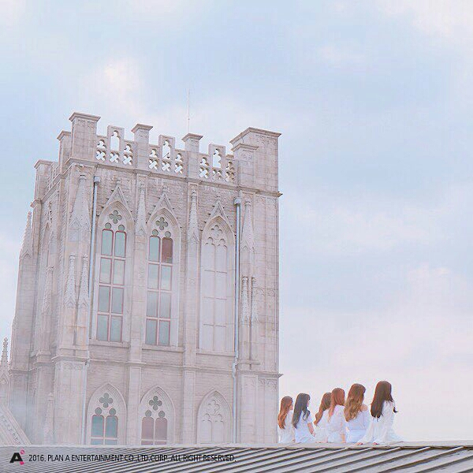

GROUP FILE · 01
Apink｜團體檔案
整理我與 Apink 的連結、喜歡的舞台，以及值得留存的相關紀錄。
GROUP PROFILE
Apink
Apink 是韓國女子團體。這個頁面用來整理團體基本資料、喜歡的歌曲與個人追星記憶；正式資料可依課堂要求補上來源。
團體介紹
歌曲收藏
我的記憶

MY APINK FILE
我的 Apink 專屬頁
「可以在這裡寫下一句最能代表你和 Apink 的話。」
— 個人備註區，可自行編輯
— 個人備註區，可自行編輯
目前為網站原型，成員名單、出道資訊與歌曲資料尚未填入，以免把示範內容誤當成你的個人紀錄。